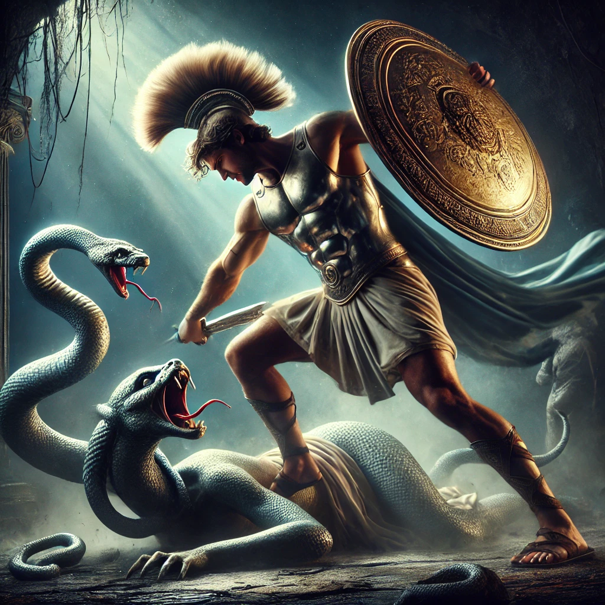

This myth tells the story of the hero Perseus and his battle with the Gorgon Medusa, one of the most famous stories from Greek mythology.
This myth tells the story of the hero Perseus, the son of Zeus and the mortal Danaë, and his courageous battle with Medusa, one of the three fearsome Gorgons. Medusa, once a beautiful maiden, was transformed into a terrifying creature with snakes for hair and the ability to turn anyone who gazed directly into her eyes to stone. Perseus, armed with gifts from the gods, embarked on a dangerous quest to defeat Medusa and claim her head as a trophy. His story is not only one of bravery but also one that showcases the involvement of divine intervention and the hero's journey, making it one of the most iconic and enduring tales in Greek mythology.
Perseus's victory over Medusa was not just a personal triumph but also a story intertwined with fate, as it would eventually lead to him saving the princess Andromeda and fulfilling the prophecy that had been foretold about his grandfather, King Acrisius. This epic adventure is filled with thrilling moments, divine assistance, and dangerous encounters, cementing Perseus as one of the greatest heroes in ancient Greek legends.
Furthermore, the myth of Perseus and Medusa has inspired countless works of art, literature, and popular culture, showcasing its enduring appeal and timeless themes of heroism, sacrifice, and the battle between good and evil. From ancient sculptures and paintings to modern films and video games, the story of Perseus and Medusa continues to captivate audiences around the world and remains a beloved and iconic tale of Greek mythology.